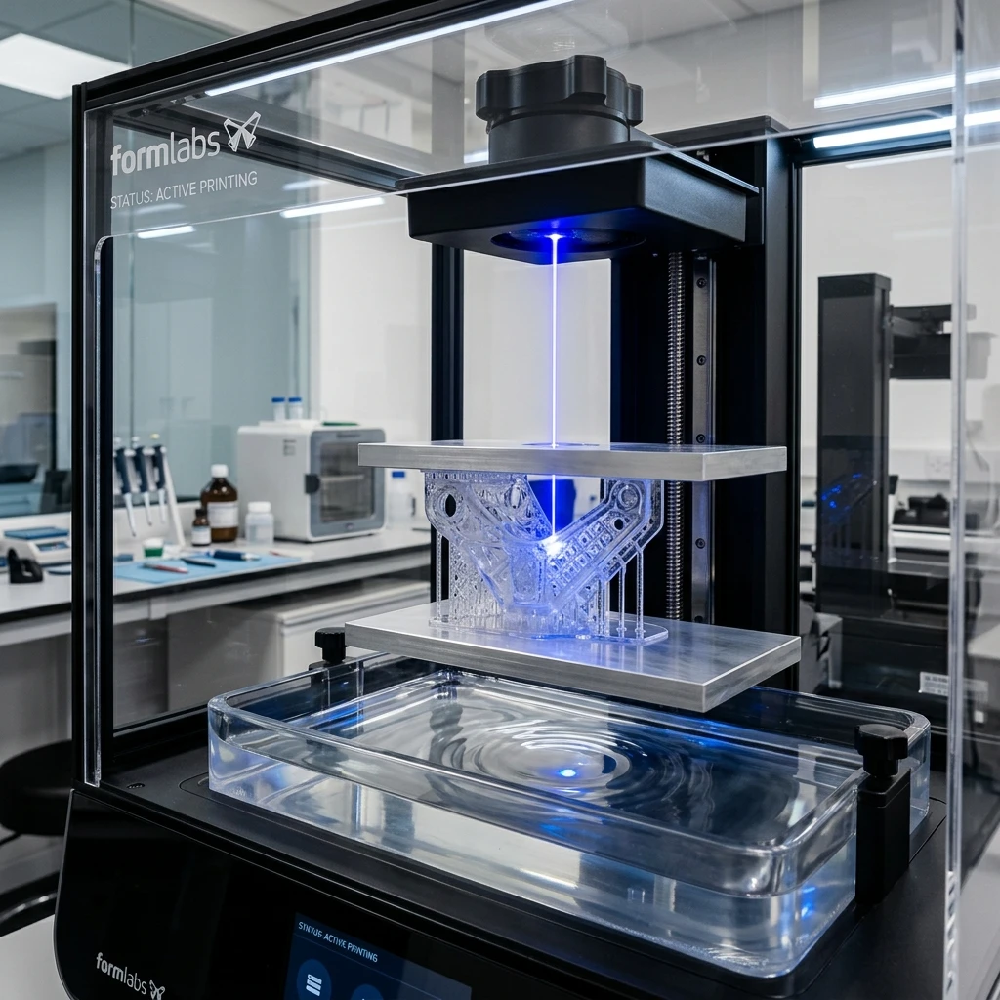
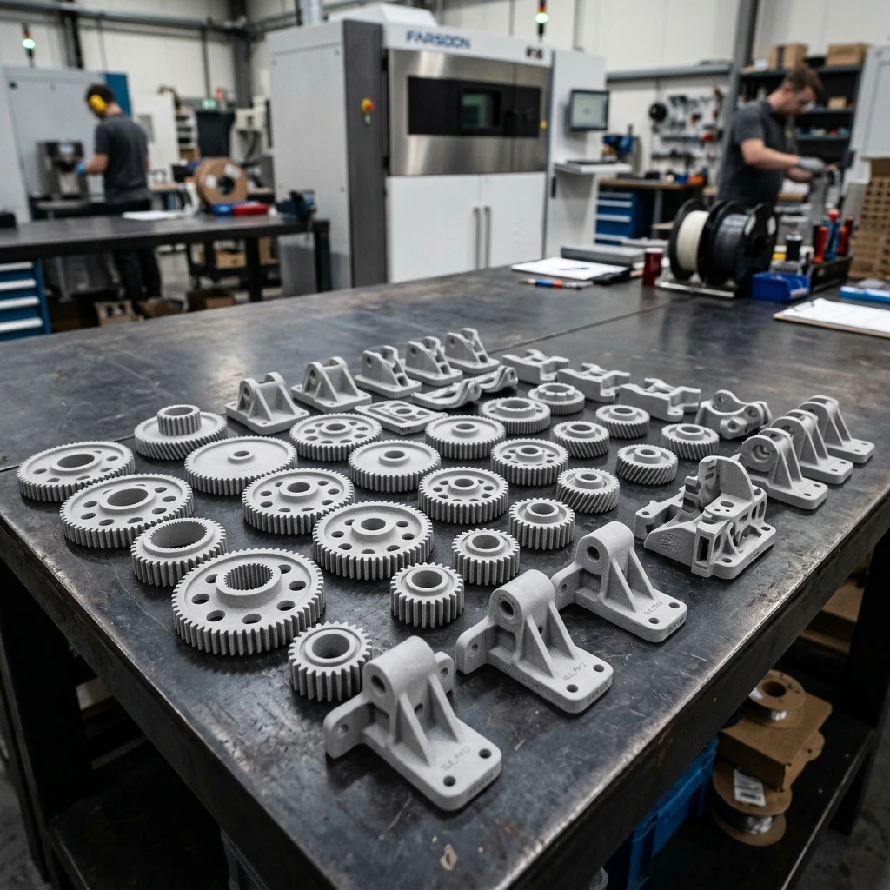
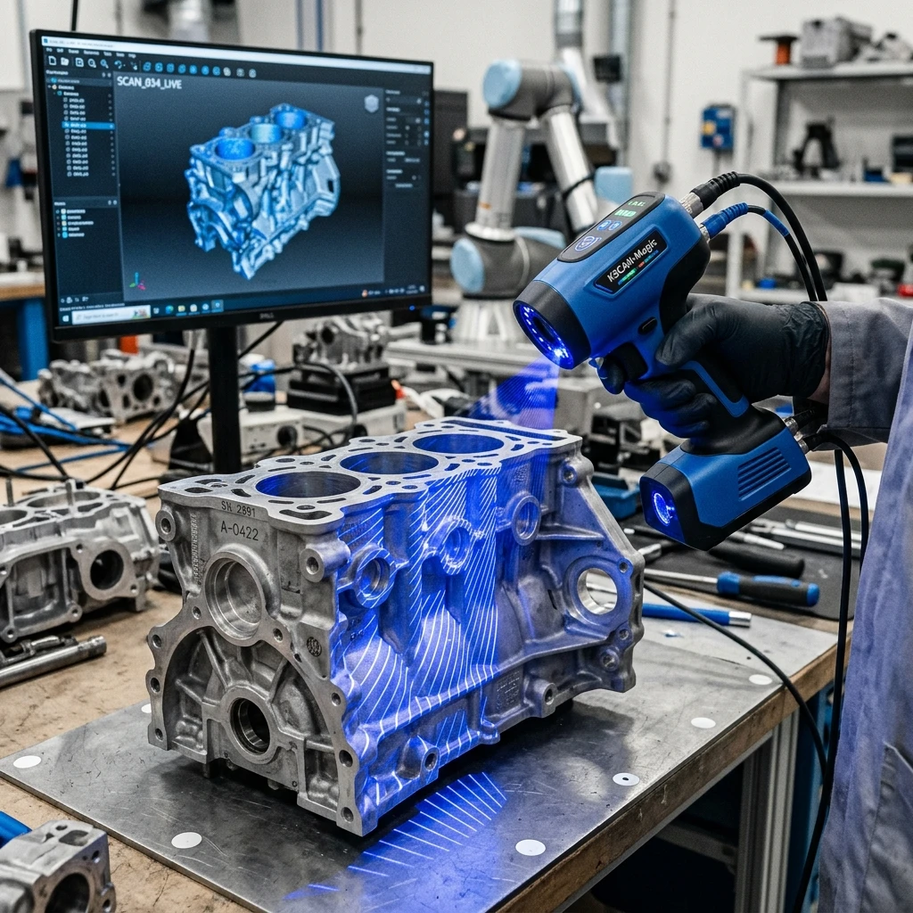

STACKLY 3D
From one-off plastic assemblies to large-scale titanium structural arrays, we deliver precision industrial tolerances and instant digital feedback loops.
Accelerate design iterations and reduce time-to-market. Our rapid SLA/FDM prototyping pipelines allow mechanical fittings and aerodynamic proofing to happen in real-time.


Skip expensive injection mold tooling configurations. Our SLS laser-sintering arrays support mid-scale batch runs of up to 10,000 components with functional mechanical strength.
Have a physical component but no digital file? Our engineers use structured-light industrial blue lasers to scan existing housings, creating fully editable CAD files.

To avoid warping or fracture, observe our structural guidelines. SLA resin: 0.5mm. FDM polymers: 0.8mm. Metal DMLS: 1.0mm.
Wall Limit: 0.5mm - 1.0mmSelf-supporting limits require no scaffolding. Design features with angles over 45° relative to the build plate to print support-free.
Scaffold-Free Limit: 45°To ensure moving hinges, joints, and gears slice cleanly and do not fuse, preserve a minimum gap tolerance of 0.3mm in CAD files.
Clearance Limit: 0.3mm